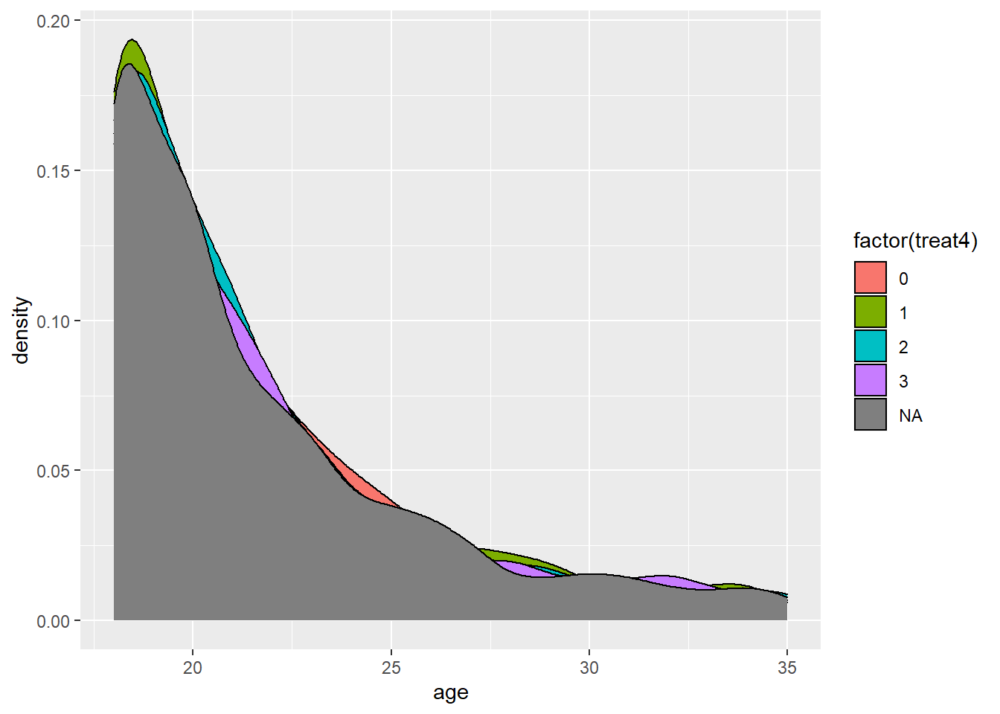
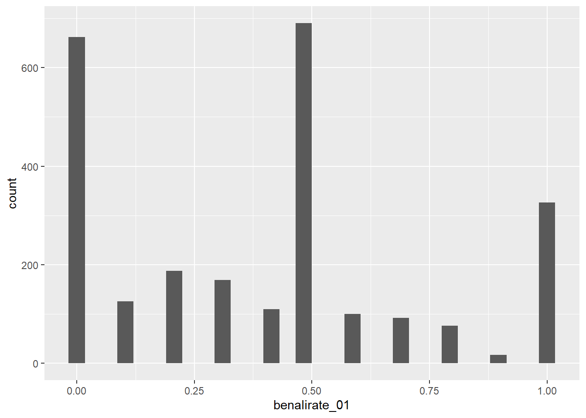

# it's a Stata file, so we need:
library(readstata13)
library(tidyverse)
library(here)
# load the data
d <- read.dta13(
here('data/finkel-et-al/tunisia_democracy_replication.dta')
)Finkel Replication
Step 1: Load the Data
Step 2: First Pass (Balance Tests)
Let’s start by just comparing the treatment and control groups. First, balance tests. Do the treated and control groups look the same on these pre-treatment covariates?
d |>
count(treat4) treat4 n
1 0 890
2 1 948
3 2 928
4 3 948
5 NA 1355# what's the average age by treatment group?
d |>
group_by(treat4) |>
summarize(avg_age = mean(age, na.rm = TRUE))# A tibble: 5 × 2
treat4 avg_age
<int> <dbl>
1 0 21.6
2 1 21.6
3 2 21.6
4 3 21.6
5 NA 21.7ggplot(data = d,
mapping = aes(x=age,
fill = factor(treat4))) +
geom_density()
# gender
d |>
group_by(treat4) |>
summarize(pct_female = sum(female == 'female') / n() * 100)# A tibble: 5 × 2
treat4 pct_female
<int> <dbl>
1 0 36.0
2 1 33.3
3 2 34.5
4 3 32.5
5 NA 35.9# there's more females in placebo than the treatments.
# is that a statistically significant difference?
d$female <- as.numeric(d$female == 'female')
logit1 <- glm(female ~ factor(treat4), data = d)
library(modelsummary)
modelsummary(logit1)| Model 1 | |
|---|---|
| (Intercept) | 0.360 |
| (0.016) | |
| factor(treat4)1 | −0.026 |
| (0.022) | |
| factor(treat4)2 | −0.015 |
| (0.022) | |
| factor(treat4)3 | −0.035 |
| (0.022) | |
| Num.Obs. | 3714 |
| R2 | 0.001 |
| AIC | 4999.0 |
| BIC | 5030.1 |
| Log.Lik. | −2494.478 |
| RMSE | 0.47 |
Step 3: Estimate Some Treatment Effects
First, the unconditional ATE.
ggplot(data = d,
mapping = aes(x = benalirate_01)) +
geom_histogram()
ben_ali_regression <- lm(benalirate_01 ~ factor(treat4), data = d)
summary(ben_ali_regression)
Call:
lm(formula = benalirate_01 ~ factor(treat4), data = d)
Residuals:
Min 1Q Median 3Q Max
-0.4270 -0.3539 0.0730 0.1461 0.6461
Coefficients:
Estimate Std. Error t value Pr(>|t|)
(Intercept) 0.42700 0.01439 29.668 < 2e-16 ***
factor(treat4)1 -0.02095 0.02003 -1.046 0.295679
factor(treat4)2 -0.07311 0.01999 -3.657 0.000261 ***
factor(treat4)3 -0.03160 0.02019 -1.565 0.117766
---
Signif. codes: 0 '***' 0.001 '**' 0.01 '*' 0.05 '.' 0.1 ' ' 1
Residual standard error: 0.3301 on 2193 degrees of freedom
(2872 observations deleted due to missingness)
Multiple R-squared: 0.006503, Adjusted R-squared: 0.005143
F-statistic: 4.784 on 3 and 2193 DF, p-value: 0.002512library(estimatr)
ben_ali_regression <- lm_robust(benalirate_01 ~ factor(treat4), data = d)
modelsummary(ben_ali_regression, stars = TRUE)| Model 1 | |
|---|---|
| (Intercept) | 0.427*** |
| (0.015) | |
| factor(treat4)1 | −0.021 |
| (0.020) | |
| factor(treat4)2 | −0.073*** |
| (0.020) | |
| factor(treat4)3 | −0.032 |
| (0.020) | |
| Num.Obs. | 2197 |
| R2 | 0.007 |
| R2 Adj. | 0.005 |
| AIC | 1370.5 |
| BIC | 1399.0 |
| RMSE | 0.33 |
| + p < 0.1, * p < 0.05, ** p < 0.01, *** p < 0.001 |